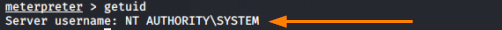
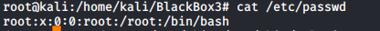
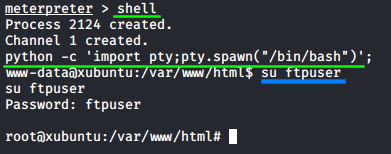
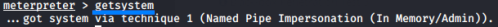

privilege escalation
getuid → which user is running the process exploited by
metasploit

Privilege escalation(Linux)
cat /etc/passwd → alternatively to geuid
if we are on
Linux to know the privileges of our user we can view /etc/passwd.
If the third
parameter is 0, then we are a privileged system user. For more more information see
STORED
PASSWORD 
shell
python -c 'import pty;pty.spawn("/bin/bash")';
su <username>
Often during pen tests you may obtain a shell without having tty(terminal), yet wish to interact further
with the system.
python -c 'import pty;pty.spawn("/bin/bash")'; allow us to spawn
a tty shell. Obviously some of this will depend on the system environment and installed packages. For more about
Shell Spawning →
HERE
Privilege escalation routine(until Windows 7)
If the
owner of the process does not have high privileges on the
victim system, we can use the
getsystem command.
getsystem command runs a privilege escalation routine on
the target machine.
In Windows environments, the
system user
has the highest privileges on a machine.
Anyway from Windows 7 this flaw is been patched and the
User Account Control policy prevents privilege
escalation
Bypassing
User Account Control(UAC)
To check if a UAC is enabled
run post/windows/gather/win_privs
we put in background the session where on the machine we have meterpreter shell but not
Administrative permission
we search for the bypass user account control module and Administrative privilege
use exploit/windows/local/bypassuac
set SESSION 1 #the one that we have put in background
now the session has the
UAC policy disabled, so the
getsystem command works
now we are NT Authority\System of the machine, which is the most privileged account on Windows, we
can verify it with